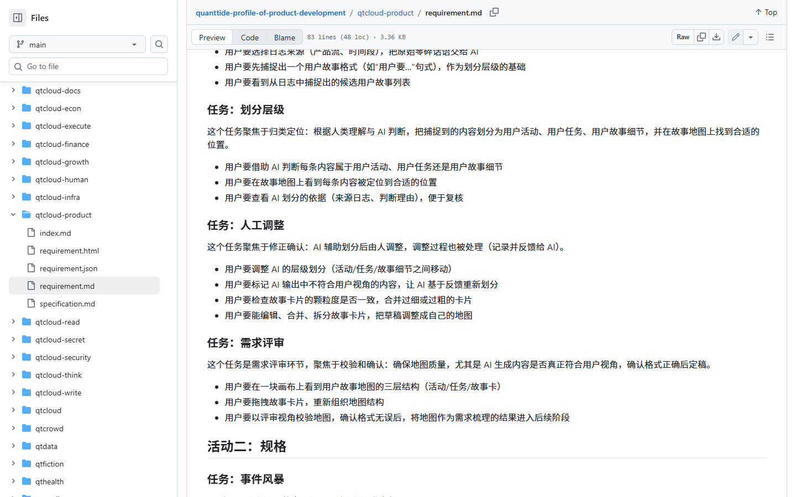
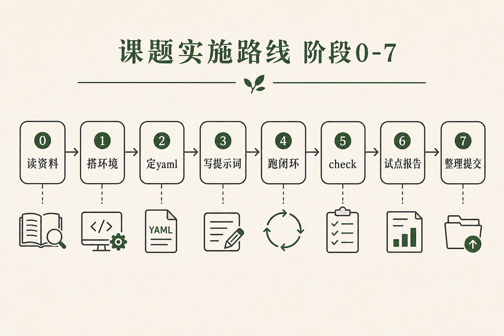
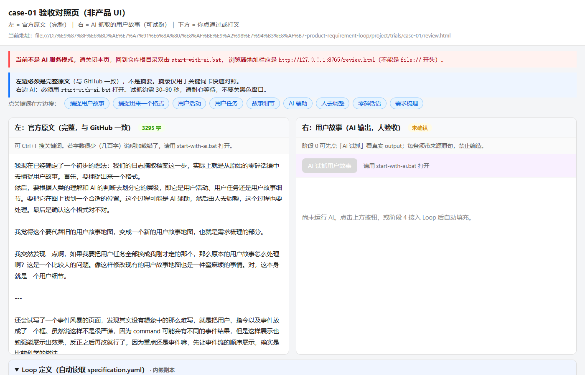
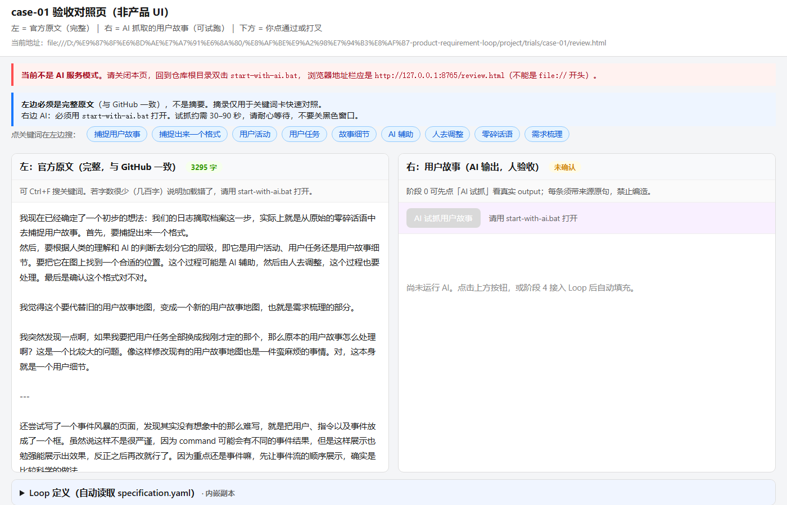
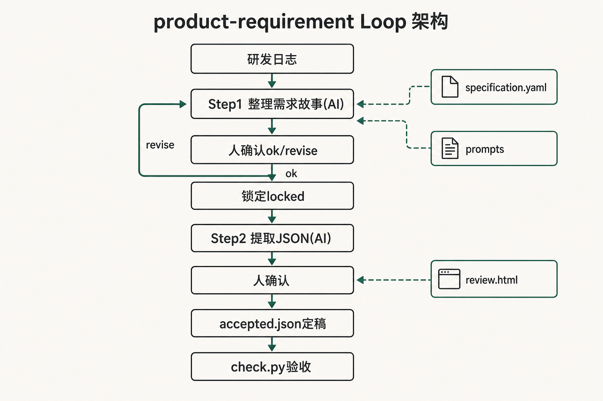
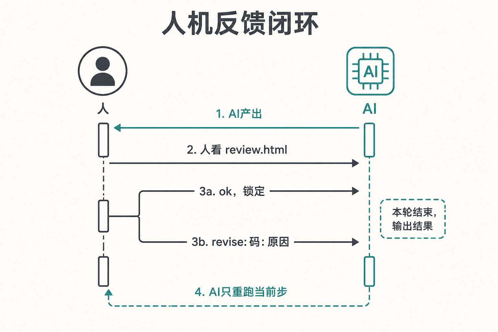
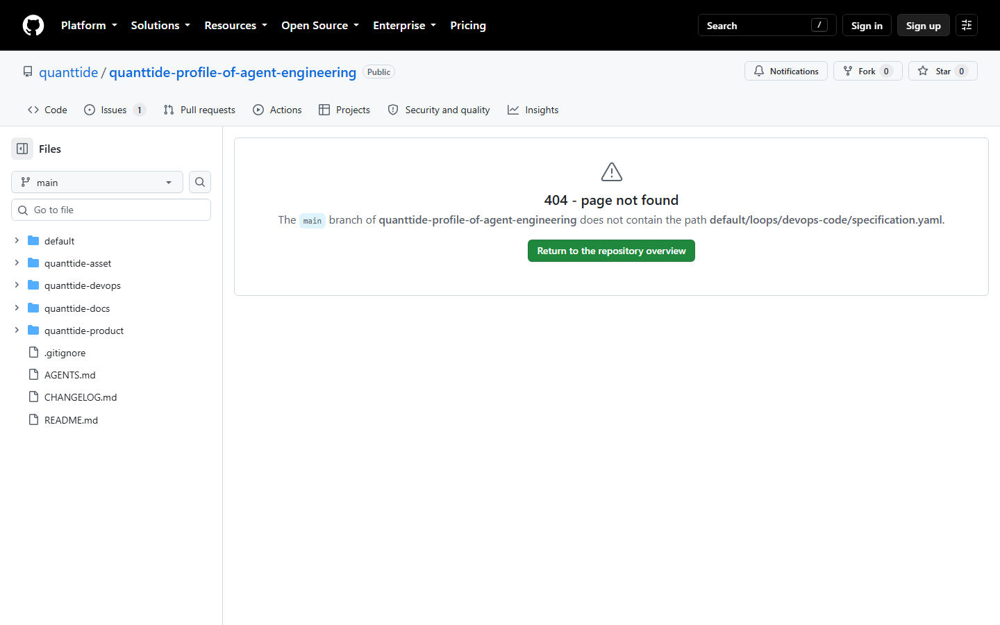
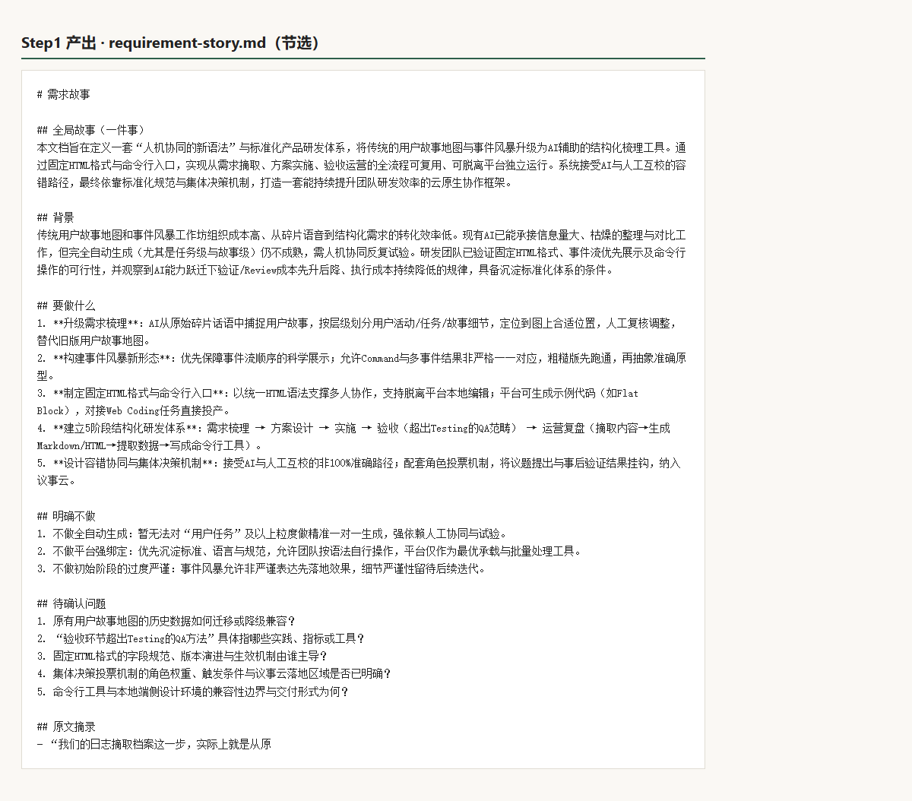
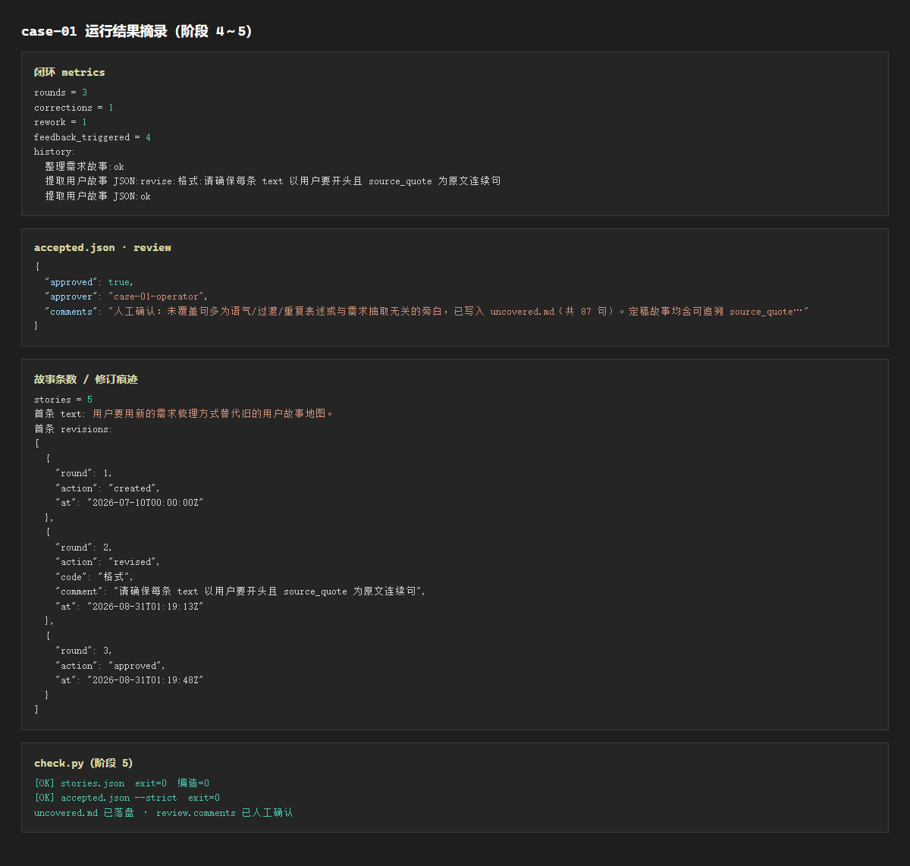
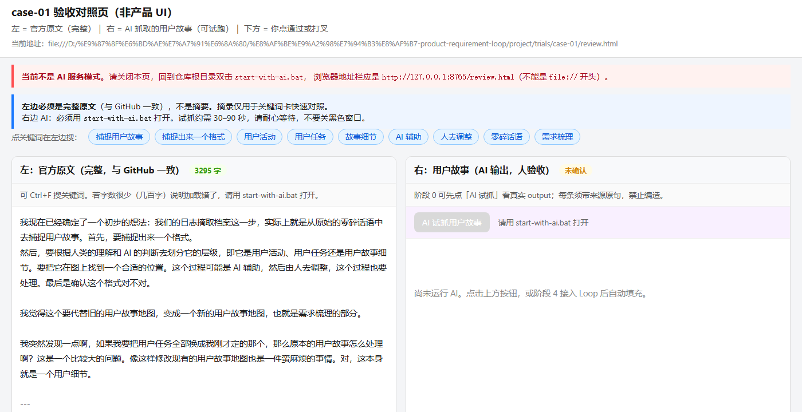

故事从哪儿开始
一个产研负责人飞书里的几句话，引发了这次课题
日志太散了，想从里面抓「用户要……」
AI 帮忙分一分，人改完再定稿。
别瞎编，原文没说的不要加。
小王觉得说清楚了。可一周后排期，没人能回答：
- 这几句话最后变成了哪几条需求？
- AI 有没有自己加戏？
- 谁拍板说「这条算数」？
课题目标：不是再做一个聊天机器人，而是把「从日志到定稿」做成能跑、能改、能留痕、能给别人复现的一套东西。
从研发日志到定稿需求：人两次把关、机器两次产出、通过的步骤锁起来、定稿带修订记录。 八个阶段，一条可复现的闭环。
一个产研负责人飞书里的几句话，引发了这次课题
日志太散了，想从里面抓「用户要……」
AI 帮忙分一分，人改完再定稿。
别瞎编，原文没说的不要加。
小王觉得说清楚了。可一周后排期，没人能回答：
产品云有完整需求，Agent 工程侧只有说明书
产品云的需求文档写得很明白：要从研发日志里抓用户故事，人要能改，层级要分得清。但在 Agent 工程那边，同名的东西只有一页说明，没有能真正跑起来的程序。

先验、再画图纸、写台词、真跑、验收、写报告、整理

左原文、右故事、下确认——和 review.html 同一套交互
如果 AI 抽出来的故事和原文对不上，或者自己编了一条，人看不出来，后面全白搭。所以我做了一个验收对照页：


| 打叉类型 | 意思 |
|---|---|
| 编造 | AI 加了原文没有的东西 |
| 分层 | 活动 / 任务 / 故事分错了 |
| 漏了 | 原文有，AI 没抓到 |
| 格式 | 不像「用户要……」句式 |
| 其他 | 以上都不像，但总觉得不对 |
三步走，中间停两次；通过了就锁，打叉只改当前步
第 1 步 AI 把乱日志整理成「一件事」 → 需求故事
↓ 人停一下：通不通？能往下走吗？
第 2 步 AI 从故事里抽出 JSON 条目 → 故事列表
↓ 人再停：有没有编造？分层对不对？
第 3 步 人 定稿 → accepted.json




先讲成一件事，再抽条目；不许编造，每条带原文出处
| 台词文件 | AI 在干什么 | 打个比方 |
|---|---|---|
| 第一步台词 | 把日志讲成「一件事」 | 给领导写一页 briefing |
| 第二步台词 | 抽「用户要……」条目 | 从 briefing 摘待办清单 |

程序按图纸跑，人在两个关口真正停下来
ok → 锁进 output/locked/ok → 生成定稿，每条故事带修订履历
机器验收 → 试点报告 → 别人也能跑
| 阶段 | 做了什么 | 结论 |
|---|---|---|
| 5 | check.py 查编造、句式、定稿合规；未覆盖句写 uncovered.md | 机器验收全绿 |
| 6 | trial-report：门槛（申请）和实测（本次）分开写 | 有 Loop 时纠偏有通道 |
| 7 | README、run-stage4-loop.bat、verify_all 0–7 | 换个人也能复现 |
录视频时镜头请停 5 秒
有 revised 和 approved，不是一次过
第一步通过后真的锁了
八个阶段串联验收通过

答辩结尾可念